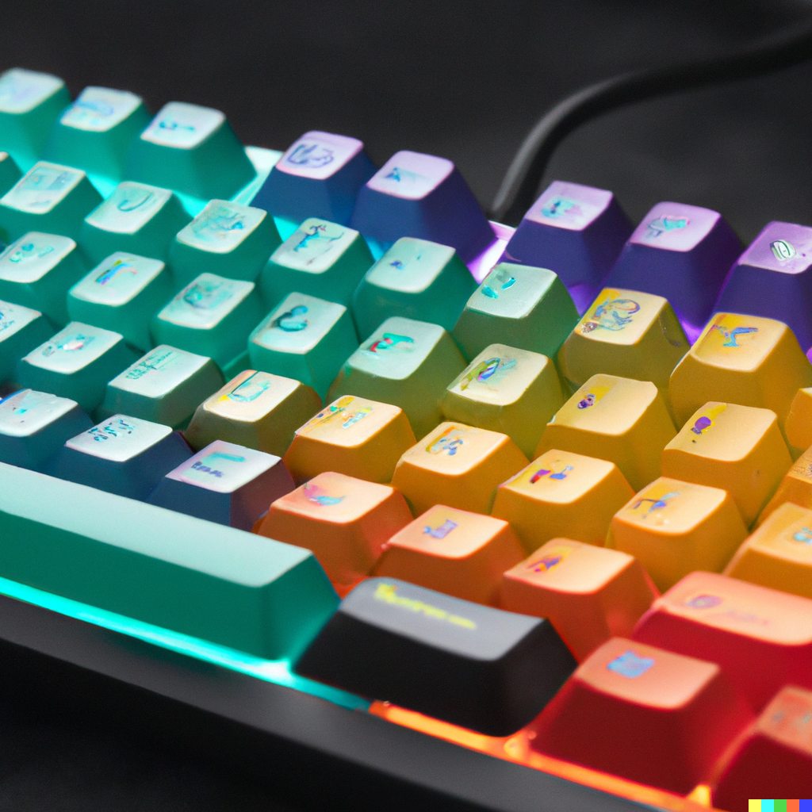
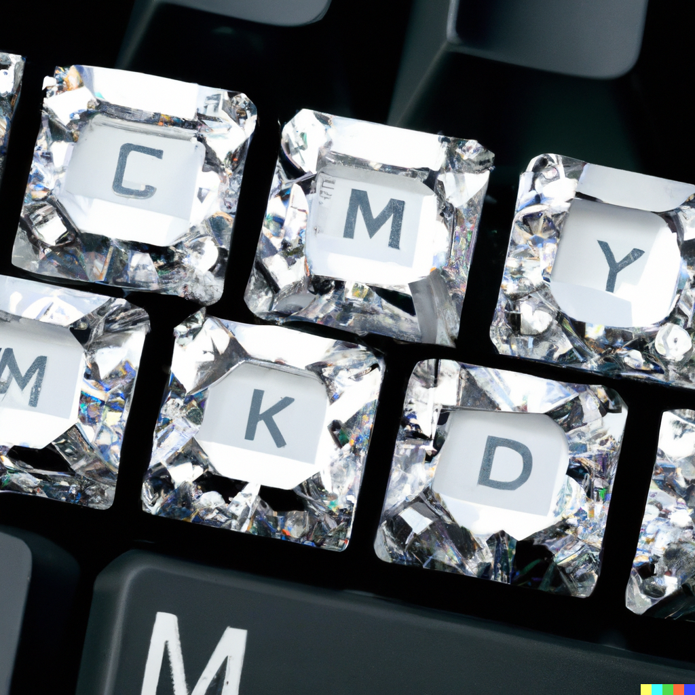
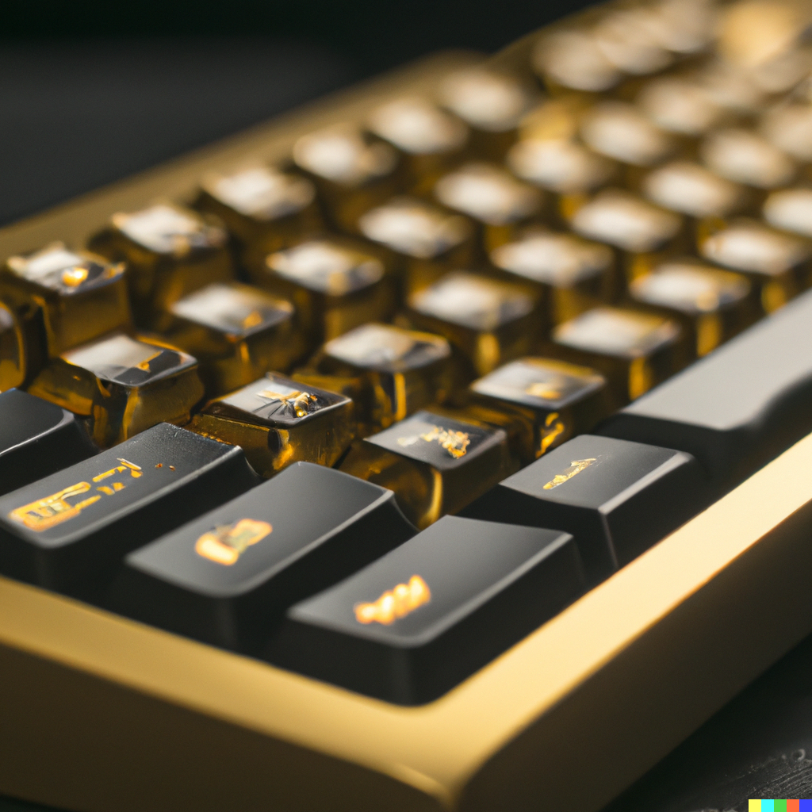
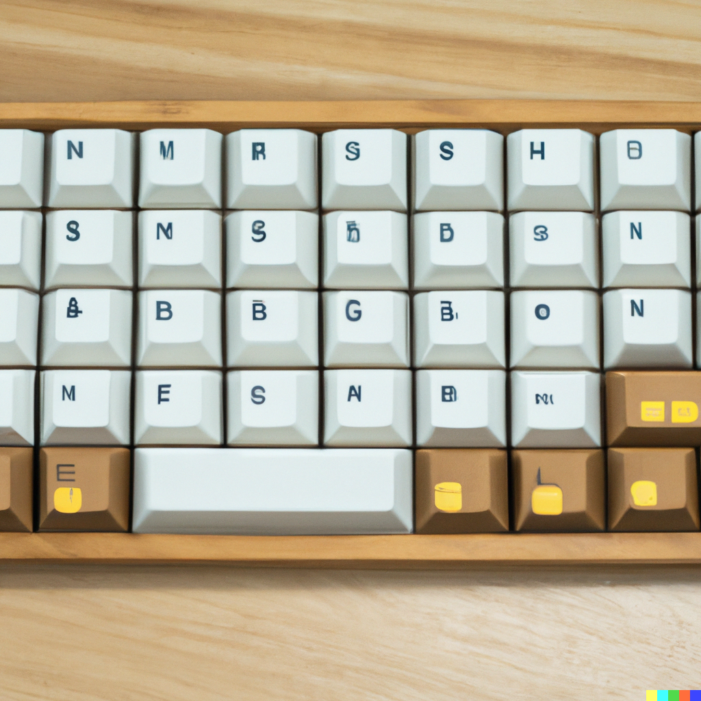

Arrow es una empresa centrada en la elaboración
de teclados "QWERTY". Nos diferenciamos del resto
de marcas debido a que no realizamos teclados
de serie, sino que son teclados únicos y personalizados.
No realizamos dos teclados iguales, cada cliente nos
propondrá su idea de teclado y nosotros lo haremos posible.
los mensajes importantes para volver a consultarlos más tarde.
PERSONALIZACIÓN INFINITA

Acabados en Oro, Plata, e incluso diamantes o zafiros, usted puede
personalizar su teclado único en el mundo con cualquier adorno que
se le pueda ocurrir, su imaginación es el único límite.
Cada pieza y cada tecla se fabrica individualmente según las necesidades
de nuestros clientes.
SWITCHES DE CALIDAD

Obtendrá de nosotros la mejor calidad de switches del mercado,
además de poder perosnalizar el tacto y el ruido de las teclas
al gusto, swithes red, blue, brown, e incluso los más novedosos
hasta la fecha, los llmados "Switches omni-pint".
Todos nuestros teclados ARROW vienen integrados con
teclas multimedia, para el volumen y el display de videos en segundo plano.
NOS ADAPTAMOS A CUALQUIER IDIOMA

ARROW llega a todas las partes del planeta y, por ello
nos comprometemos a realizar teclados en prácticamente todas
las lenguas existentes (veáse la lista de excepciones).
VIDEO
ESPECIFICACIONES BÁSICAS
- Interruptores/Switches mecánicos
- Conexión USB Passthrough
- Iluminación independiente por tecla
- Teclas multimedia
- Acabado profesional ARROW
- Idiomas excluidos: Chamicruo,Ongota y Árabe